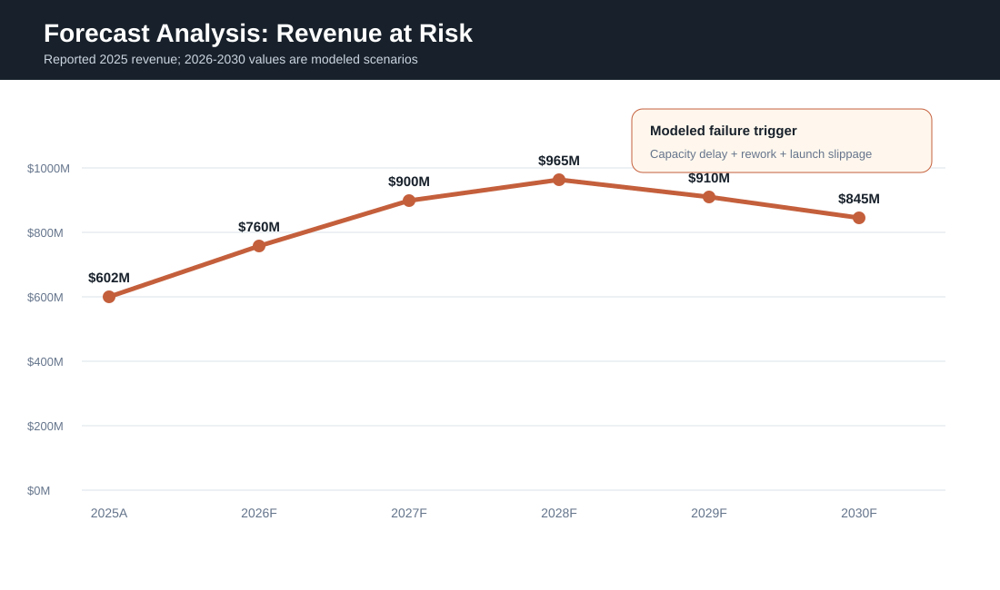
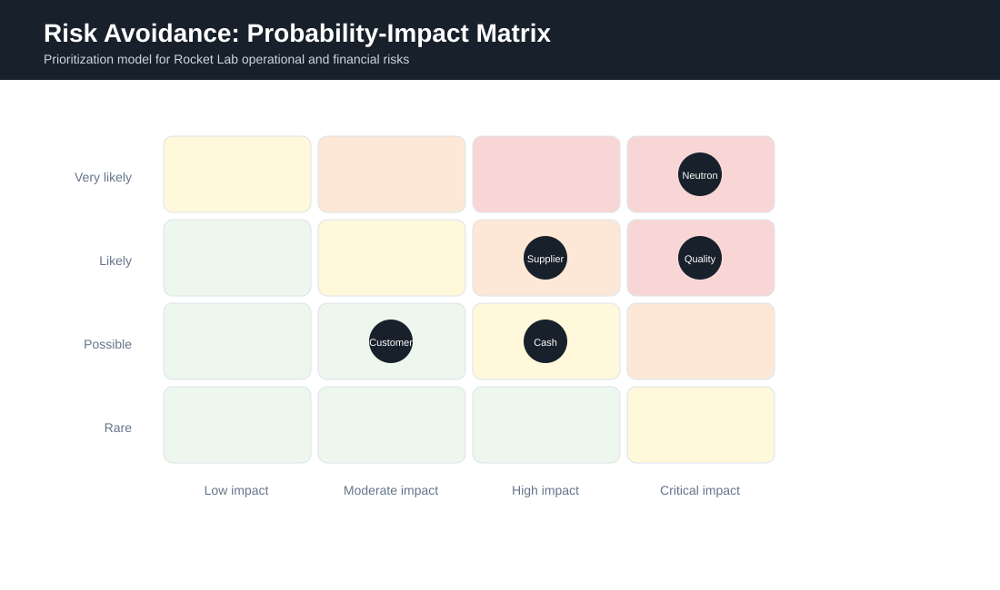
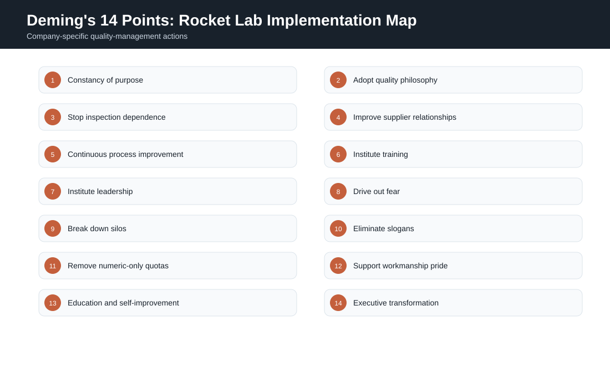
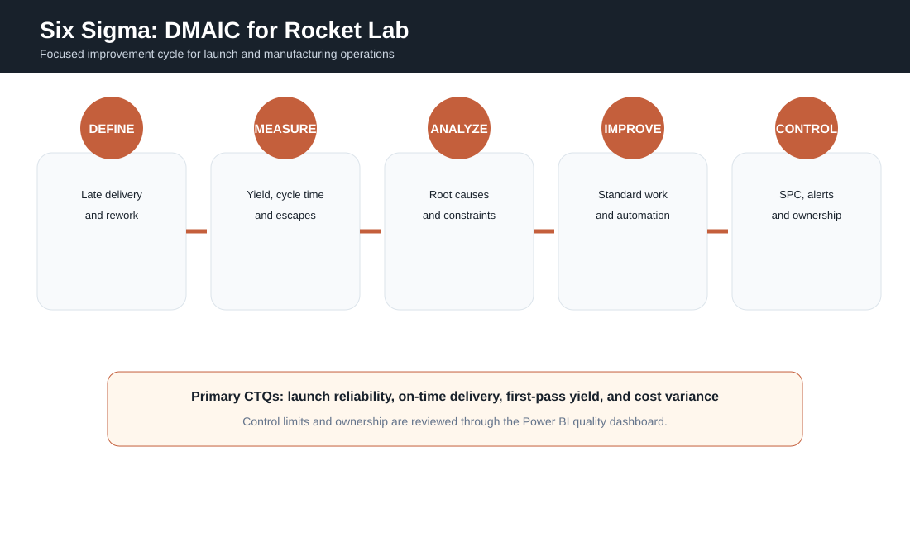
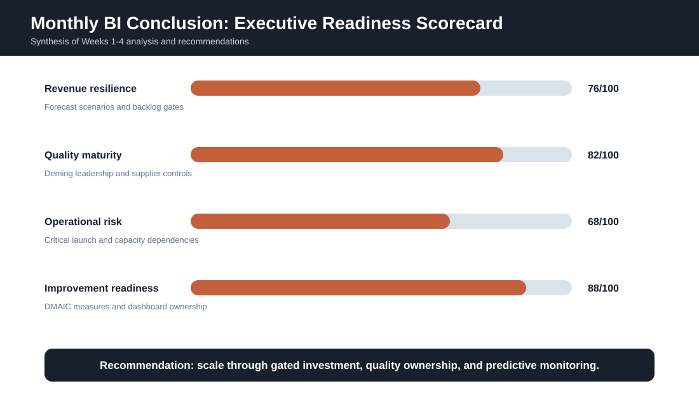

WEEK 4 · FORECAST AND PREDICTION · AUGUST 2026
Rocket Lab Corporation: Forecast, Risk, and Quality Management
A five-part business intelligence assessment of the future consequences of unmanaged growth, risk avoidance, Deming's 14 points, Six Sigma implementation, and the combined strategic conclusions developed during the month.
Forecast Analysis
Rocket Lab is operating in a situation comparable to Piaggio before its turnaround because strong market opportunity can be undermined by capacity strain, inconsistent quality, debt pressure, and an inability to deliver at the pace demanded by customers. Rocket Lab's immediate area requiring business intelligence attention is the relationship among Neutron development, manufacturing capacity, launch readiness, and cash consumption. The company reported $601.8 million in 2025 revenue, but it also used substantial cash in operations and investing activities while relying on financing to support expansion (Rocket Lab Corporation, 2026a).
The forecast visual uses the reported 2025 revenue as a baseline and models a scenario in which revenue reaches $760 million in 2026, $900 million in 2027, and $965 million in 2028. The failure scenario begins after 2028. If launch delays, supplier constraints, quality escapes, and production rework are not controlled, modeled revenue declines to $910 million in 2029 and $845 million in 2030. These values are analytical projections rather than company guidance.
The pattern represents a capacity ceiling. Demand may remain available, but recognized revenue weakens when launches slip, milestones are delayed, and production resources are consumed by rework. The forecast should therefore be connected to leading indicators instead of revenue alone. Required indicators include first-pass yield, supplier defect rate, critical-path schedule variance, launch-site readiness, engine test completion, customer milestone achievement, overtime, backlog conversion, and unrestricted liquidity.
A monthly executive forecast should include a base case, controlled-growth case, and failure case. The controlled-growth case should release capital only after technical and contractual gates are met. The failure case should trigger intervention when projected utilization exceeds sustainable capacity, quality escapes rise above control limits, or schedule variance threatens customer milestones.

Risk Avoidance
Risk avoidance should not be interpreted as eliminating every uncertain project. In an aerospace company, avoiding all risk would prevent product development and market expansion. The appropriate objective is to avoid unmanaged exposure by identifying conditions that can create irreversible schedule, safety, quality, or liquidity damage.
The risk diagram ranks five major exposures. Neutron schedule risk is critical because late qualification or launch-site readiness can delay revenue recognition and weaken customer confidence. Supplier bottlenecks and quality escapes are also high-priority risks because specialized aerospace components may have long replacement lead times. Cash burn is a significant financial risk because Rocket Lab's 2025 operating and investing activities consumed cash, even though financing produced a net increase in liquidity. Customer concentration is lower in immediate operational severity but remains important because large government or commercial awards can materially influence backlog and facility utilization (Rocket Lab Corporation, 2026a).
Recommended controls
- Establish milestone gates for major capital releases and facility expansion.
- Monitor supplier delivery, defect rates, and single-source exposure through Power BI.
- Use statistical control limits for production yield, test failures, and rework hours.
- Maintain a protected liquidity reserve based on modeled operating and capital requirements.
- Use independent schedule reviews for Neutron, launch infrastructure, and major customer programs.
- Assign a named executive owner and response plan to every critical risk.
The risk dashboard should refresh at least monthly for executive review and more frequently for program-level operations. Alerts should emphasize changes in probability and impact rather than presenting a static list. A rising supplier defect rate, for example, should automatically increase the probability rating of schedule and quality risks.

Deming's 14 Points
Deming's management philosophy supports Rocket Lab because aerospace quality cannot be created by final inspection alone. Reliability must be designed into engineering, sourcing, manufacturing, testing, launch operations, and leadership decisions. Deming emphasized long-term purpose, management responsibility, education, supplier relationships, and continual improvement rather than short-term numerical pressure (Deming, 1986).
Constancy of purpose should be expressed through a long-term commitment to safe, repeatable, and economically sustainable access to space. The quality philosophy should be adopted across Electron, HASTE, Space Systems, and Neutron rather than being limited to a quality department. Dependence on final inspection should be reduced by using in-process controls, automated test capture, design-for-manufacture reviews, and process capability analysis.
Supplier selection should evaluate total quality, reliability, and strategic resilience instead of purchase price alone. Continuous improvement should focus on recurring defects, production constraints, and launch preparation delays. Training must include technical certification, quality tools, data literacy, and cross-functional process knowledge. Leadership should remove barriers that prevent engineers, technicians, and operators from reporting problems early.
Breaking down silos is especially important because launch readiness depends on communication among vehicle engineering, propulsion, software, manufacturing, range operations, finance, and customer program teams. Numerical quotas should not encourage teams to complete units or tests before the process is ready. Performance measures must balance output with first-pass yield, safety, reliability, schedule quality, and customer outcomes.
The final point requires executive transformation. Leaders should review the same quality dashboard used by operational teams, sponsor corrective actions, and verify that process owners have authority and resources. Deming's 14 points become practical when each principle is assigned to a measurable action, accountable owner, implementation date, and audit measure.

Six Sigma
Six Sigma should be implemented through a focused DMAIC project rather than as a broad certification campaign. The recommended initial project is reducing late delivery and rework in a selected production or integration process. The problem is closely connected to customer milestones, cost variance, manufacturing capacity, and launch readiness.
Define. The project charter should define the process boundary, customer requirements, operational impact, financial effect, and accountable sponsor. Critical-to-quality measures should include on-time delivery, first-pass yield, launch reliability, and cost variance.
Measure. The project team should establish reliable definitions for defects, rework, cycle time, queue time, engineering changes, test failures, and supplier delays. Data quality checks are required before conclusions are drawn. Power BI should display trends, distributions, control charts, and process segmentation.
Analyze. Root cause analysis should separate common-cause variation from special-cause failures. Pareto analysis, process mapping, cause-and-effect analysis, regression, and failure-mode analysis can identify whether late delivery is driven by suppliers, test capacity, engineering changes, staffing, tooling, or scheduling.
Improve. Improvements may include standardized work, earlier supplier qualification, automated data capture, redesigned inspection points, parallel testing, workload balancing, and removal of approval bottlenecks. Pilot results should be compared with the baseline before broad deployment.
Control. The control plan should define metric ownership, control limits, escalation rules, review frequency, and corrective-action responsibilities. A process is not complete when average performance improves; the improvement must remain stable over time. Six Sigma therefore provides the measurement discipline needed to convert Deming's management principles into repeatable operational controls (George, 2002).

Conclusion
The month's business intelligence work developed a connected view of Rocket Lab's market opportunity, probability-based customer analysis, growth capacity, personnel requirements, cash flow, expansion alternatives, marketing data architecture, forecast risk, and quality management. Week 1 identified India as a long-term expansion opportunity and used quantitative and regional analysis to compare target markets. Week 2 evaluated promotional decisions, target customers, sampling probability, lottery outcomes, and Bayesian campaign updates. Week 3 examined growth, workforce needs, cash flow, Virginia expansion, and the data flow required to govern marketing and capture decisions.
Week 4 demonstrates that growth alone does not guarantee sustainable performance. Rocket Lab must convert demand and backlog into completed milestones, reliable products, and repeatable launches. The modeled forecast shows how revenue can weaken when capacity, quality, and schedule performance are not controlled. The risk analysis identifies Neutron schedule, supplier bottlenecks, quality escapes, cash burn, and customer concentration as management priorities.
Deming's 14 points provide the leadership and cultural framework for long-term quality. Six Sigma provides the structured analytical method needed to define problems, measure performance, identify causes, improve processes, and maintain control. Together, these methods support a BI system that combines financial, operational, program, customer, supplier, and quality data.
The final recommendation is to scale through gated investment rather than unrestricted expansion. Capital should follow technical readiness, funded demand, quality capability, and protected liquidity. Power BI should provide executives with a common operating view of forecast scenarios, backlog conversion, program milestones, production yield, supplier performance, cash requirements, and critical risks. This approach protects Rocket Lab's ability to grow while reducing the probability that rapid expansion produces the same debt, quality, and market-delivery problems that once threatened Piaggio.

References
- Deming, W. E. (1986). Out of the crisis. MIT Press.
- George, M. L. (2002). Lean Six Sigma: Combining Six Sigma quality with lean production speed. McGraw-Hill.
- Microsoft. (n.d.). Power BI documentation. https://learn.microsoft.com/power-bi/
- Rocket Lab Corporation. (2026a). Annual report for the fiscal year ended December 31, 2025. U.S. Securities and Exchange Commission. https://www.sec.gov/Archives/edgar/data/1819994/000181999426000013/rklb-20251231.htm
- Rocket Lab Corporation. (2026b, February 26). Rocket Lab announces fourth quarter and full year 2025 financial results. https://investors.rocketlabcorp.com/news-releases/news-release-details/rocket-lab-announces-fourth-quarter-and-full-year-2025-financial